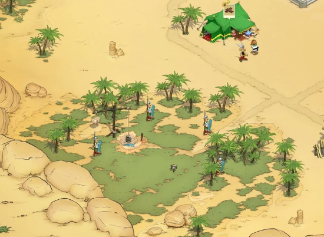
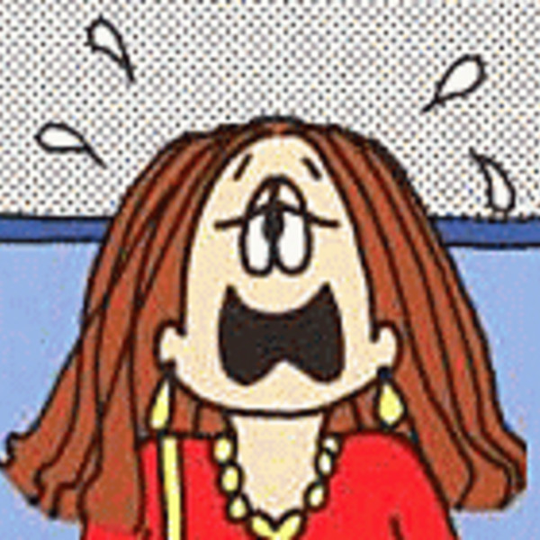
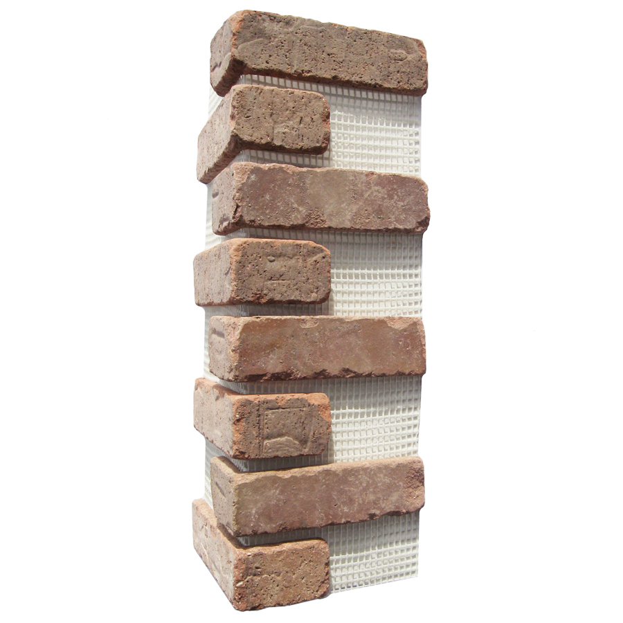
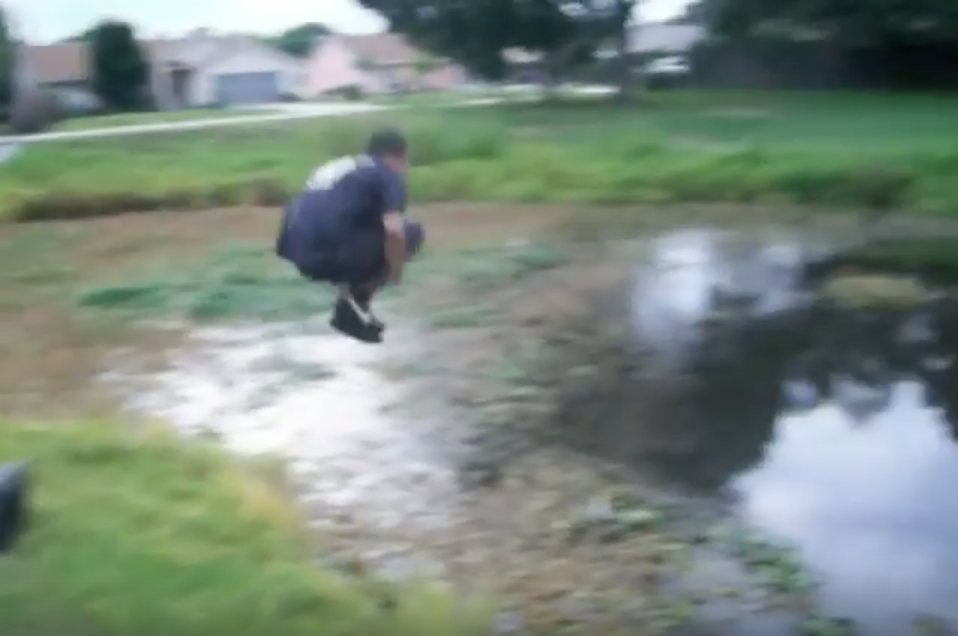
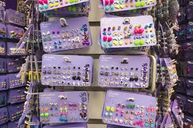
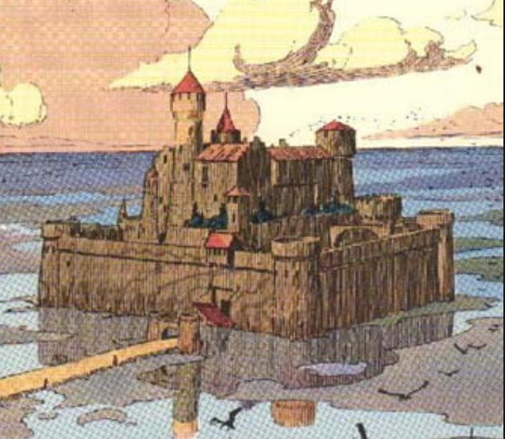
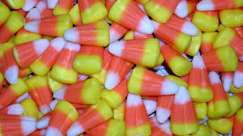
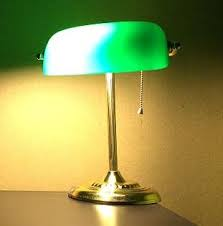
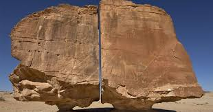

[car horn blares]
This dictionary is intended to be used as a guide to help interpret your dreams. The best person to interpret your dreams is yourself.
To see the letter "A" in your dream represents the beginning of a new stage. You are moving on to something new and grand. Alternatively, the letter "A" invokes feelings of superiority and grandeur. It may indicate the name or initial of a person.
To see or eat abalone in your dream indicates a transitional period in your life. The symbol may also be a play on words to indicate feelings of "loneliness".
To dream that you are abandoned suggests that it is time to leave behind past feelings and characteristics that are hindering your growth. Let go of your old attitudes. A more direct and literal interpretation of this dream indicates you have a fear of being deserted, abandoned, or even betrayed. It may stem from a recent loss or a fear of losing a loved one. The fear of abandonment may manifest itself into your dream as part of the healing process and dealing with losing a loved one. It may also stem from unresolved feelings or problems from childhood. Alternatively, the dream indicates that you are feeling neglected or that your feelings are being overlooked. Perhaps the dream is a metaphor that you need to approach life with "reckless abandon" and live more freely. 
To abandon others in your dream suggests that you are overwhelmed by the problems and decisions in your life.
To see an abbey in your dream signifies spirituality, peace of mind and freedom from anxiety. You are in a state of contentment and satisfaction. Help for you is always around the corner.
To see an abbey in ruins indicates feelings of hopelessness. You have a tendency to not finish what you started.To see an abbot in your dream suggests that someone has power over you and are making you do things that you do not necessarily want to do. You are feeling confined or restricted. The dream indicates that you will experience many obstacles and setback before achieving success and prestige.
To see abbreviations in your dream may represent the initials of someone in your life. The abbreviations could stand for an organization or a common acronym or it may spell out some hidden message or advice. The dreaming mind likes to make use of puns, as well as shorthand messages. For example, "CD" could be a pun on a "seedy" situation. "AA" could stand for Alcoholics Anonymous and thus point to the dangers or your excesses and negative behaviors. "Inc" may represent an "inkling", hunch or suspicious you have about a situation. The initails DM may refer to a direct message or perhaps that you need to check Dream Moqds for your dream anaylsis.
To see your abdomen in a dream refers to your natural instincts and repressed emotions. There is something in your real life that you "cannot stomach" or have difficulties accepting. You need to get it out of your system. Alternatively, the dream symbol may be strictly physiological and you may just be experiencing constipation or indigestion.
To dream that your abdomen is exposed represents issues you have with trust and feelings of vulnerability. You are expressing your primal emotions and instincts.
To dream that your abdomen is swollen indicates that some new project is in the works.
To see a baby in your dream signifies innocence, warmth and new beginnings. Babies symbolize something in your own inner nature that is pure, vulnerable, helpless and/or uncorrupted. If you dream that the baby is smiling at you, then it suggests that you are experiencing pure joy. You do not ask for much to make you happy. If you find a baby in your dream, then it suggests that you have acknowledged your hidden potential. If you dream that you forgot you had a baby, then it suggests that you are trying hide your own vulnerabilities; you do not want to let others know of your weaknesses. Alternatively, forgetting about a baby represents an aspect of yourself that you have abandoned or put aside due to life's changing circumstances. The dream may serve as a reminder that it is time for you to pick up that old interest, hobby, or project again. Dreaming of holding a baby is analogous to holding onto an earlier part of your life where you felt more depended on and more needed.
If you dream that you are on your way to the hospital to have a baby, then it signifies your issues of dependency and your desires to be completely cared for. Perhaps you are trying to get out of some responsibility. If you are pregnant in real life, then a more direct interpretation may simply mean that you are experiencing some anxieties of making it to the hospital when the time comes.
To dream of a crying baby symbolizes a part of yourself that is deprived of attention and needs to be nurtured. Alternatively, it represents your unfulfilled goals and a sense of lacking in your life. If you dream that a baby is neglected, then it suggests that you are not paying enough attention to yourself. You are not utilizing your full potential. Alternatively, this dream could represent your fears about your own children and your ability to protect and to provide for them.
To dream about a starving baby represents your dependence on others. You are experiencing some deficiency in your life that needs immediate attention and gratification.
To see yourself or someone as a baby in your dream refers to your desire to be cared for and nurtured. Alternatively, the dream may mean that you or someone is behaving immaturely.
To dream that a baby is walking or dancing refers to the potential and possibilities that life has in stored for you. The future looks bright. The dream may also be a metaphor that you need to take baby steps in your relationship, toward your goal, in a work project or whatever undertaking. If you have a baby in real life, then the dream is a reflection of your hopes for that baby.
To dream of an extremely small baby symbolizes your helplessness and your fears of letting others become aware of your vulnerabilities and incompetence. You may be afraid to ask for help and as a result tend to take matters into your own hands.
To see a dead baby in your dream symbolizes the ending of something that was once a part of you. If you dream that you are trying to snort up a dead baby, then it means that you are refusing to move onto a new stage of life. You are holding onto a dead past.
To dream that you are dipping a baby in and out of water signifies regression. You are regressing to a time where you had no worries and responsibilities. Alternatively, such a scenario is reminisce of when the baby is in the fetus and in its comfort zone. In fact, some expectant mothers even give birth in a pool, because the environment in the water mimics the environment in the uterus. It is less traumatic for the baby as it emerges into the world. So perhaps, the dream represents your search for your own comfort zone.
Dreaming of rescuing a drowning baby means that you are allowing yourself to be vulnerable and accepting help from others.
If you dream of having or adopting a baby of a different race, then it means that you are acknowledging and/or embracing other's physical differences. Everyone started out as a baby who is pure and innocent.
Seeing an evil baby or a demon baby in your dream implies that you are apprehensive or afraid of a new project that you are undertaking. You may be taking on more than you can handle. If you dream that a baby has a third eye on the back of the head, then it means getting caught. You are acting carelessly when you think no on is watching.
To see a baby bottle in your dream represents your issues of dependency. You are relying too much on others. If you are drinking from a baby bottle, then the dream means that you need are emotionally immature. You need to grow up.
To see a baby carriage in your dream symbolizes your desire for a family or longing for a baby. If the baby carriage is empty, then it indicates sadness or an unfulfilled goal. Alternatively, it suggests that you need to cater to the needs of your own inner child.
To see baby clothes in your dream suggests that you are expressing yourself in a more subtle way. Alternatively, baby clothes represent your former ways of thinking or old habits which you have outgrown.
To see or feed baby food in your dream indicates that nurturance and care is needed in a waking situation. Alternatively, the dream may be a metaphor to indicate that you need to eat smaller portions of food.
To eat or dream that you are being fed baby food indicates that you are being forced to re-learn something that you already know.
To dream of a baby shower suggests that you are welcoming a new start. You are given a chance to start over again and do things differently this time around. You have a new found faith in life itself.
To dream that you are babysitting suggests that you need to care for the child within yourself.
To see or call for a babysitter in your dream indicates that you need to acknowledge and work on your inner child.
To meet a bachelor in your dream suggests that you are seeking freedom in your love life. For a man to dream that he is a bachelor indicates that he is having difficulty with gaining his own sense of self or freedom in a relationship. Alternatively, the bachelor represents your masculine side.
To dream of back-biting about someone warns that you will cause harm to someone if you continue on your current course. Think twice over your actions and its consequences.
To dream that someone is back-biting you signifies that you will have some family problems.
To see a Cadillac in your dream suggests that you are driven to succeed. Your ambition will take you far in life.
To dream that you are in a cage indicates that you are experiencing inhibitions and powerlessness in some areas of your life. You are feeling restricted, confined and restrained in a current relationship or business deal. Somebody may be keeping a short leash on you, where you are lacking the freedom to act independently.
To dream that you are putting a wild animal into a cage signifies that you will succeed in overcoming your rivals and fears. It is also symbolic of your ability to control you animalistic rages and anger.
To see a bird in a cage suggests that you are feeling limited in your expression and a sudden lost of freedom. You may be experiencing frustrations and an inhibited spirituality. The dream may also imply that you are feeling like a "jail bird".
Cage Fighting
To dream that you are cage fighting indicates that you are feeling restricted or confined in a current relationship. An aspect of yourself is fighting to be expressed or let out.
To watch a cage fight represents conflicting ideas or beliefs.
To see a cake in your dream indicates that you need to learn to share and allocate your workload instead of trying to do everything yourself. Cakes also symbolize selfishness or the feeling of not getting your fair share. More positively, the dream may represent your accomplishments and achievements. Consider also the metaphor a "piece of cake" or some situation that is easy.
To see a partially eaten cake in your dream signifies missed and lost opportunities.
To dream that you are buying a cake suggests that you have accepted the rewards and recognition you are getting for our work. You are learning to be comfortable in the spotlight.
To dream that you are eating calamari indicates that you are feeling battered or beaten. However, you are tough. Hang in there!
To see a calculator in your dream suggests that you need to thoroughly think through some problem and carefully evaluate your choices. You need to lay out some sort of plan or outline. The symbol may also be a metaphor for someone who is "calculating", cunning and scheming.
To see a calendar in your dream represents the passing of time and past events. The dream may also be a reminder of a special event, appointment or important date in your waking life.
To see a calf in your dream symbolizes immaturity and inexperience. You need to develop certain qualities.
Known as the Golden State, to dream of California, refers to your desire for instant wealth. It may also suggests that you are looking for fame. If you live in California, then the dream may just be a reflection of your reality.
To see or use a caliper in your dream reflects your concerns about not measuring up to the standards or expectations of others. Alternatively, dreaming of a caliper means that you need to be careful in making a decision or judgment.
To see calla lilies in your dream symbolize new beginnings, rebirth and longevity. In particular, a white calla lily represents purity, simplicity or elegance. Alternatively, the calla lily refers to a commitment.
To see or use a calling card in your dream indicates that there is someone that you need to reach out to. If the calling card has the name of someone you know on it, then it means that their presence is with your spiritually, even though they may not be with you physically. Something in your waking life is reminding you of this person.
To dream that you have calluses symbolize hard work. You have be laboring over a difficult task or situation.
To dream that you are calm denotes a fulfilling life. You find contentment and satisfaction in what you have. 
To dream that someone is trying to calm you down suggests that you will experience many setbacks, especially if you continue to let your emotions run out of control.
To see calomel in your dream indicates a rivalry.
To dream that you are taking calomel signifies that you are being manipulated and taken advantage of. It is time to open your eyes and not allow yourself to be stepped on.
To see your calves in your dream symbolize movement and your ability to jump from situation to situation. In particular, if you are admiring your own calves, then it denotes a needy or codependent relationship.
To see the letter "D" in your dream signifies mediocrity. Alternatively, the letter D refers to receptiveness and joy. As a Roman Numeral, it could represent the number 500.
To see daffodils in your dream symbolize self-love, renewal, inner growth, optimism, inspiration, and hope. It may signal a fresh start, a new beginning or a new project.
To give someone daffodils in your dream represent unrequited love. Someone that you are interested in may not feel the same way about you. The dream is telling you that it is time to move on.
To see or use a dagger in your dream represents some "cutting remark". Perhaps you feel that you have been stabbed in the back.
To dream that you take a dagger from somebody's hand means you will overcome hardships and misfortune.
To see daisies in your dream symbolize freshness, beauty, innocence, simplicity, friendliness, and cleanliness. If you are plucking the petals of a daisy, then it denotes the purity of love.
To dream that someone gives you a bouquet of daisies symbolizes sorrow and/or lost love.
To dream of walking in a field of daisies represents good luck and prosperity. Someone will be there to offer you a helping hand and some guidance for your problems.
To see a damask rosebush in your dream signifies happy unions.
To dream that you receive a bouquet of damask rose foretells of true love.
To see an eagle in your dream symbolizes nobility, pride, fierceness, freedom, superiority, courage, and powerful intellectual ability. It also represents self-renewal and your connection with your spirituality. You will struggle fiercely and courageously to realize your highest ambitions and greatest desires. Alternatively, if you live in the United States, then the national bird could represent your patriotism and devotion to country.
To see a chained or trapped eagle in your dream represents a desperate situation where you are feeling restricted and confined. You are unable to express yourself and be who you really want to be. Consider also what the eagle is chained down to for additional clues as to what might be holding you back.
To see a nest of young eagles in your dream represents your achievements and your climb to the top of the social ladder.To dream that you kill an eagle signifies your ruthlessness. You will let nothing stand in your way of ambitions and obtaining your goals, even if it means hurting those around you. If someone else kills an eagle, then it indicates that your fame, fortune and power will be ruthlessly taken from you.
To dream that you eat the flesh of an eagle implies that your strong and powerful character will lead you to great wealth and influence.
To dream that your earlobes are long represent your spiritual or ancestral connection. It is also indicative of royalty and your social status in life.
To dream that you are stretching your earlobes indicates your desires to be more connected with your ancestors and understanding of where you came from. Alternatively, it means that you want to stand out and be different. You want to go against the norm.
To dream that you are wearing earmuffs means that you have a tendency to hear what you want to hear and not what was actually said. If you see someone else wearing earmuffs, then it implies that you have trouble making yourself heard. You have a difficult time to get others to listen to you.
Seeing or buying earmuffs in your dream indicates ignorance.
To dream that you or someone is wearing earrings suggests that you need to listen more carefully and pay attention to a message that someone is conveying to you. In particular, to see or wear pearl earrings in your dream indicates that are being given some wise advice you should follow. Alternatively, pearl earrings may serve as a memory of a person in your life who wore them.
To see broken earrings in your dreams suggests that someone is talking about you.
To dream that you are buying earrings represents your desire for acceptance and affection.
To dream that you lose an earring indicates that you are being misguided.
To see ears in your dreams suggest that you need to be more responsive or receptive to guidance and assistance from others. You may be relying too much on your own judgment and intuition. You need to listen more closely to what you are being told. Alternatively, it signifies your immaturity and lack of experience. If you dream that your ears are weird or oddly shaped, then it indicates deception.
To dream that you are cleaning wax from your ears suggests that you are not listening to those around you. There may be something that you are refusing to hear. Are you turning a deaf ear?
To dream of pain in your ear indicates that you will be receive some bad or offensive news.
To dream that your ear has been severed or cut off implies that you are tired of hearing what others tell you. If someone else's ear has been cut off, then it suggests that you should keep your opinions to yourself. Or that you need to stop talking about others.
To dream that your ear is being pulled indicates dissent and disagreements. If you are pulling someone else's ear, then it suggest that you have a tendency to force your opinions on others.
To dream that your ears are getting red symbolizes shame or guilt.
To dream that someone is whispering in your ear suggests that you need to pay closer attention to something or listen to someone more carefully. Alternatively, it represents your insecurities and anxieties that people are talking about your behind your back.
To dream that you are getting your ears pierced represents some stinging remarks or insults.
To dream that there is a fly in your ear implies that someone is trying to discretely tell you something that you don't want to hear.
Dreaming that there are bugs coming out of your ear suggests that you have overheard something that you shouldn't have. Alternatively, bugs in your ear represent rumours.
To notice the earth in your dream indicates that you need to be "grounded" and realistic. Perhaps your sense of stability and security is lacking. Consider the consistency of the earth for additional significance on how you are feeling. If the earth opens or separates, then it represents a project or relationship that you are afraid of falling into. 
To dream that you can bend the earth signifies your ability to control your actions and react at a precise or optimal moment.
To see the planet Earth in your dream signifies wholeness and global consciousness. You are interconnected with the world.
To dream of the Earth's core symbolizes suppressed anger. You are holding in a lot of negative emotions.
To see the letter "F" in your dream symbolizes failure. It may also denote an expletive as in "F you".
To dream of reading fables represent your literary mind and romantic notions. Alternatively, the fable indicates that there is a lesson to be learned or a message that you need to listen to.
To dream that you are living a fable symbolizes your need to face reality. It is better to face a situation head on then to retreat into a fantasy world.
To see your own face in your dream represents the persona you show to the world as oppose to the real you. It may refer to how you confront problems and deal with issues in your life. 
To dream that your face is flawed or pimply symbolizes erupting emotions. You may be suffering an attack on your persona or your reputation. According to folklore, if you dream that your face is swollen, then it means that you will see an improvement to your financial situation.
To dream that your face or someone's face is cracking indicates some deception or big lie. You are unable to maintain a straight face and are about to be exposed.
To dream that you or someone has two faces or that the faces changes quickly from one person to another indicates untrustworthiness. You or someone in your life is acting "two-faced".
To dream that you are washing your face suggests that you need to come clean about some matter.
To dream that your face warps into a bubble indicates that you are not expressing your feelings enough. You are keeping too much inside.
Dreaming of a blurry face means that you have no sense of who this person really are. Your subconscious is telling you not to trust this person. You may be being deceived.
To dream that you are gagging denotes that you are not able to express yourself in how you really feel about a situation. Alternatively, this dream may forewarn that you need to keep quiet before you put your foot in your mouth.
To dream that you are being gagged indicates that you are being prevented from saying what you really want to say.
To see the letter "H" in your dream symbolizes cooperation, balance and teamwork.
To dream about an old habit or a habit that you recently quit is an expression of your subconscious desires. Your suppressed urges are making themselves known via your dreams.
To dream that someone is hacking into your computer or files symbolizes your vulnerabilities and weaknesses. The dream may be a way of telling you that you need to work on building up your self esteem.
To dream that you are hacking into someone else's computer indicates that you are overstepping your boundaries in some situation or relationship.
To play hacky sack in your dream refers to your ability to act quickly on your feet. You like to keep things moving along.
To see a hacky sack in your dream implies that you need to be more flexible.
To use hairspray in your dream suggests that you are overly concerned with your looks and image. You care too much with what others think of you.
To dream about half of something indicates that something in your waking life is incomplete or unresolved. It may also indicate that you are only partially acknowledging your feelings. You or someone else is limiting or restricting you. Alternatively, the dream suggests that you need to be open to compromise and meet halfway.
To read the horoscopes in your dream indicate that you are expressing some concerns about your future. Consider the significance of the astrological sign. What does the horoscope says and how it can applied to your waking life. The dream may offer a significant message or some advice.
To dream that you are in horror over something symbolizes genuine fear and parallels your waking feelings of horror.
Dreaming of horrific things implies that you are numb by the things around you. You are becoming too indifferent.
To see a horse in your dream symbolizes strength, power, endurance, virility and sexual prowess. It also represents a strong, physical energy. You need to tame the wild forces within. The dream may also be a pun that you are "horsing around". Alternatively, to see a horse in your dream indicates that you need to be less arrogant and "get off your high horse". If the horse has two heads (one on each end), then it implies that you are being pulled into two different directions. Perhaps your strength or power is being divided. Or you are confused about some sexual matter. 
To see a black or dark horse in your dream signifies mystery, wildness, and the unknown. You are taking a chance or a gamble at some unknown situation. It may even refer to occult forces. If the horse is white, then it signifies purity, prosperity and good fortunes. To dream that you are being chased by a white horse may be a pun on chaste. Perhaps you are having difficulties dealing with issues of intimacy and sexuality.
To see a dead horse in your dream indicates that something in your life that initially offered you strength is now gone. This may refer to a relationship or situation. Consider the phrase "beating a dead horse" to indicate that you may have maximized the usefulness of a certain circumstance.
To see a herd of wild horses in your dream signifies a sense of freedom and lack of responsibilities and duties. Perhaps it may also indicate your uncontrolled emotions. If you are riding a wild horse, then it represents unrestrained sexual desires.
To dream that you are riding a horse suggests that you are in a high position or position of power. Alternatively, it indicates that you will achieve success through underhanded means. You lack integrity. If you are riding a horse that is out of control, then it means that you are being carried away by your passions.
To see an armored or medieval horse in your dream refers to your fierceness, aggression, power and/or rigidity. You may be too confrontational. Alternatively, you may be trying to protect yourself from subconscious material or sexual desires that is emerging.
To dream that you are bathing a horse represents a renewal of strength and vigor. You are experiencing a burst of energy in some aspect of your life.
To dream about a talking horse refers to higher knowledge. Consider the significance of what the horse is saying. If the horse is black, then the message may be coming from your subconscious. If the horse is blue, then the message may be of sadness. You or someone is looking for help, but don't know how to go about getting it. The dream may also a metaphor for the idiom "straight from the horse's mouth".
To see the letter "I" in your dream is on pun on me, myself and I. You need to focus on you. Or the dream may be an indication that you are being too selfish. Alternatively, the letter represents action and responsibility.
To see an ibis in your dream symbolizes devotion, perseverance and aspirations.
To see ice in your dream suggests that you are lacking a flow of ideas and thoughts. You are not seeing any progress in your life. Alternatively, the dream implies that you are taking risks that you shouldn't be taking.
To dream that you slip on ice symbolizes your insecurities and self-esteem issues. There may also be an obstacle ahead for you.
To dream that you fall through ice suggests that your emotions are threatening to come crashing through.
To dream of melting ice implies that you are slowly warming up to a situation. You are acknowledging your negative emotions.
To see or eat ice cream in your dream denotes good luck, pleasure, success in love and satisfaction with your life. You need to savor the moment and enjoy it. Alternatively, the dream may suggest that you need to cool off and not let your temper get out of hand. On the other hand, the ice cream may be a pun on "I scream". Perhaps there is something that you need to let out.
To dream that you are eating bad or sour ice cream signifies sorrow, disillusionment, or betrayal.
To see ice cream melt in your dream symbolizes failure to realize your hopes and desires.
To see the letter "J" in your dream means that there is something that you need to hold on to and grasp, as reflected by its hook shape. Alternatively, the dream may be a pun on someone named "Jay" or whose initial starts with J.
To dream that you are jogging suggests that you are proceeding through life at a steady pace. You are not really taking any action toward changes.
To feel or notice your joints in your dream represent flexibility. It refers to a give and take situation and the need to work together as a team.
To dream that you are having joint problems suggest that things are not coming together the way you want it to. You are experiencing difficulties in your progress.
To dream that you are telling a joke denotes that you are not being taken seriously and as a result you are feeling frustrated. On the other hand, you may not be the one who is taking an issue seriously.
To hear a joke in your dream signifies that you are doing something that is either pointless or ridiculous. The dream may serve to alleviate some tension that has been weighing on you.
To see the letter "K" in your dream implies that something is "okay". Alternatively, the dream may be a pun on someone named "Kay" or whose initial starts with K.
To convert to Kabbalism or dream of Kabbalism signifies your connection with God and your understanding of the world you live in. You need to gain a better insight of your surroundings and environment.
To see a kaleidoscope in your dream symbolizes the different fragments and facets that make up character. Various aspects of your life are coming together. Alternatively a kaleidoscope foretells of difficulties in achieving your goals and choosing your path in life.
To see the letter "L" in your dream is symbolic of loser. Alternatively, the dream may suggests that you need to take a break from whatever you are doing. The letter L may also signify your fear of the "l-word". You cannot even bring your dreaming mind to express love.
To see or wear a lab coat in your dream symbolizes your protective nature. Alternatively, the dream implies your desire to sanitize a situation. Perhaps you are even trying to cover it up.
To see Lucite in your dream indicates support. You may be undervaluing your support system and overlooking those who have helped you along the way. Alternatively, Lucite points to your unyielding attitude. The dream may also be a pun on "new sight". Perhaps you are taking on a new perspective and a different view of things. It symbolizes clarity of mind.
To dream of good luck suggests that things will look up for you.
To dream that you have bad luck indicates that you are feeling sorry for yourself. You are quick to blame something or someone else for your own shortcomings and problems.
To dream of a lucky charm indicates that you are trying to connect with your spiritual energy. The dream may be telling you that you are putting too much faith on outside sources. You need to look within.
To see or carry luggage in your dream symbolizes the many desires, worries, responsibilities or needs that you are carrying with you and weighing you down. The size or weight of the luggage parallels the demands you are facing. You need to reduce your desires and problems in order to alleviate the pressure you are putting on yourself. Perhaps you feel that you are being held back by past emotions or issues. Alternatively, luggage symbolizes your identity and sense of security.
To dream that you lose your luggage represents a lost in your identity. Consider how you feel when you discovered that your luggage is lost. If it is a positive reaction, then it signifies an opportunity for you to start fresh. If your reaction is negative, then it suggest that you are feeling lost.
To see the letter "M" in your dream suggests that there is something that you are keeping silent about. Perhaps you have been sworn to secrecy. Alternatively, the dream may imply "Mmmmm". Your subconscious mind is hungering for knowledge or information. As a Roman Numeral, it could represent the number 1000.
To see, walk or travel on a macadamized road in your dream suggests that you are standing on solid ground. You have laid out a solid groundwork for much success in your life.
To dream that you are eating macaroni symbolizes comfort and ease. The dream may be trying to bring you back to a time where things were much simpler.
To see the letter "N" in your dream implies the end of some habit, journey, relationship or condition.
To make or eat nachos in your dream signifies your need for more leisurely pursuits. You need to take some time out.
To dream that someone is nagging you suggests that you need to change your attitudes about your preconceived notions. It is time to make some changes in your life. You need to look at things from a different perspective.
To dream that you are nagging someone indicates that you need to confront some repressed resentment or unexpressed anger.
To see or use a nail clipper in your dream implies that you need to rid something that is holding you back. It is time to move forward and grow.
To see the letter "O" in your dream signifies an exclamation of surprise as in "oh!". Alternatively, the letter O implies that you need to open wide. Perhaps there is something that you need to open up about and vocalize. It may refer to a sexual innuendo as in "the big O" or orgasm. This letter may also share the same significance as the number zero or a circle.
To see an oak tree in your dream symbolizes longevity, stability, strength, tolerance, wisdom, and prosperity. You have built a solid foundation for success in some endeavor. If there are acorns on the tree, then the symbol refers to your climb up the social ladder and rise in status.
To dream that something is out of order (as in not working) indicates that you are being confronted with an obstacle toward your goal. You need to find a new or different way to achieve this goal. Alternatively, dreaming of something that is out of order is analogous to a dysfunctional relationship or unfulfilled goal. Some aspect of your life is not working smoothly. Consider the significance of the object that is broken and who it play into your daily life.
Dreaming of something being out of order (as in not in the correct sequence) represents your thought process. The dream is telling you to look at things from a different perspective.
To see an Ouija board in your dream indicates that some relationship or situation is falling apart. Nothing is going according to planned. Alternatively, it suggests that you are ready to take certain risks in order to move ahead. The dream may also be a way of connecting with your subconscious. Consider the message that the Ouija board is telling you.
To dream that the Oiuja board fails to function indicates that your pursuit for pleasure will cause your demise and downfall. Alternatively, the dream implies that you are inviting negativity into your life.
To see the letter "P" in your dream is a pun on "pee" or urine. You need to better express your emotions.
To see or play Pac Man in your dream represents some sort of habit or behavior that is taking over your daily life.
To see or do a jigsaw puzzle in your dream represents a mental challenge or problem that you need to solve in your waking life. If there are pieces missing in the puzzle, then it suggest that you do not have all the facts needed to make an informed decision.
To see or do a crossword puzzle in your dream suggests that you are being faced with a mental challenge. The dream may be a pun on "cross words" directed at you or aimed toward someone.
To see a puzzle lock in your dream implies that you need to carefully think about how to proceed with a situation before acting. You need to have patience and calmness or else you will risk isolating yourself.
To see or play with a slider puzzle in your dream points to your need for order in your life. You need things to be a certain way.
To see a pyramid in your dream symbolizes longevity and stability. You have built a solid foundation for success. Alternatively, the dream suggests that major changes will occur over a short period of time.
To dream that you are climbing a pyramid indicates that you will find gratification and fulfillment through perseverance.
To see the letter Q in your dream is a pun on "cue". You are waiting for a sign to make the next move.
To hear a quack in your dream refers to an unoriginal idea. Someone may be trying to pass off an idea as their own. Alternatively, to hear quacking symbolizes imitation.
To dream about meeting a quota suggests that you are feeling overwhelmed by the demands that others are putting on you. You fear that you will not meet other's expectations.
To give a price quote in a dream symbolizes the value you are assigning to your talents and abilities.
To quote somebody in a dream suggests that you need to listen and heed the message in that quote. The quote may be a message from your subconscious.
To see the letter "R" in your dream suggests that you are in need of some "R and R" or some rest and relaxation.
To see a rabbi in your dream represents your attitudes about Judaism. The dream may serve to reaffirm your faith and beliefs.
To see a rabbit in your dream signifies luck, magical power, and success. You have a positive outlook on life. Alternatively, rabbits symbolize abundance, warmth, fertility and sexual activity. Perhaps your sex life needs to be kept in check. The dream can also be associated with Easter time and your own personal memories of Easter.
In particular, to see a white rabbit in your dream symbolizes faithfulness in love. The white rabbit also serves as a guide to steer you toward the right direction. To see a black rabbit in your dream refers to fear of intimacy.
If the rabbit is hopping in your dream, then it indicates fertility. You will be surrounded by children. Alternatively, the dream may be analogous to your lack of commitment and how you jump from one thing or another.
If you dream that the rabbit scratches or bites you, then it means that you need to pay more attention to your personal relationship or love life. If the bunny bites your toes, then it implies that this relationship is headed down the wrong direction.
To see a clear and calm river in your dream indicates that you are just going with the flow. You are allowing your life to float away. It is time to take a more decisive role in directing your life. Alternatively, a river symbolizes joyful pleasures, peace, prosperity and fertility. If you are crossing a river in your dream, then it represents an obstacle or issue that you need to deal with in order to move closer toward your goal. It is also reflective of a new stage in your life. If the river is muddy, then it indicates that you are in turmoil.
To see a raging, turbulent or an overflowing river in your dream signifies that your life is feeling out of control. You are feeling emotionally unsettled. Alternatively, this dream means you are ready to confront life's challenges and life's twists and turns. To see a contaminated river in your dream implies that you are feeling tired and lethargic. It may also be a sign of some illness.
To dream that a river is comprised of flowing red chili refers to the raw emotion and intense passion or anger that is flowing through you and yearning to be expressed.
To see or dream that you are Robin Hood indicates your compassion for those who are less fortunate. It refers to your giving and charitable nature.
To see a robot in your dream indicates that you are going about life in a mechanical, methodical and rigid way. You have lost the ability to express your feelings. Alternatively, a robot symbolize the way you view your working life.
To dream that you have been sabotaged indicates that there is something that you are ignoring or overlooking in your waking life.
To dream that you are sabotaging something or someone indicates that an overwhelming anxiety is threatening the boundary between your subconscious and your ego. You are feeling conflicted between right and wrong. Alternatively, the dream means that you need to get rid of your old attitudes and former ways of thinking.
To see or be a storyteller in your dream suggests that you need to hold onto the past and learn from it. You need to appreciate tradition and the lessons of the past.
To see a stove in your dream symbolizes a developing awareness. If the stove is broken and does not light, then it refers to an emotional issue you are facing in some waking relationship. You may be neglecting this relationship. Alternatively, the dream means that you need to focus your attention to something that you have placed on the back burner.
To see or play table tennis in your dream suggests that you are going back and forth between two choices. You are confused over an important decision in your life. Alternatively, the dream also indicates commitment issues. You are having difficulty committing to a decision, to a relationship or social obligation.
To see a tennis court in your dream implies that you need to choose a side in some challenge or argument.
To dream that you are in a tent indicates that you need a temporary change to your daily routine. You need to take time off and get away from the daily grind. Alternatively, the dream may mean instability and insecurity in your current situation. You do not want to settle down. Dreaming that you are in a tent may be a pun on your "in-tent" or intentions.
To see the letter "U" in your dream is a pun on "you" and how you act and behave in your waking life. Consider what you are doing and how you are feeling in the dream for additional significance. Alternatively, the dream signifies a restart. You need to go back and redo something all over again.
To make a u-turn in your dream indicates that you are altering the course of your life. You are changing directions and starting on a completely different path. Alternatively, the dream means that you have made a wrong decision or choice.
To see a no u-turn sign in your dream suggests that you cannot take back what has already been done. There is no turning back on the choices you have made.
To see an UFO in your dream signifies your desires to find your spiritual purpose in life. Alternatively, it indicates that you are feeling alienated from those around you. The dream may also be a metaphor that you are acting "spacey" or "spaced out". You need to be more grounded and come back to reality.
Dreaming that an UFO is invading or attacking the house of someone who passed away indicates that this person was suddenly taken away from you too soon. It also suggests that this person was mentally deteriorating.
To see the letter V in your dream symbolizes victory, success or peace. As a Roman Numeral, it could represent the number 5.
To dream that your vision is obstructed indicates that you are about to make an error in judgment. There is something that you are not seeing clearly.
To see visions in your dream indicate that your mind is free from any restraint and free to wander without any inhibitions. Such dreams are said to have a different feel. Some of these vision dreams may be described as epic dreams.
To visit someone in your dream suggests that you need to reconnect with this person in your waking life. Perhaps you have been neglecting that relationship.
To see the letter "W" in your dream is a reiteration of "you". You need to focus on you and only you.
To dream of installing wadding into something indicates your need for security and to be protected. Alternatively, the dream may be analogous to your fears of gaining weight or getting fat.
To see or wear a wet suit in your dream suggests that you are slowly and safely exploring your inner feelings and emotions. You are a point where you are comfortable in acknowledging your vulnerabilities and feelings.
To see an X in your dream signify something that is forbidden. You are being prevented to do something.
To dream of a treasure map marked by a big X indicates that your goals are in sight and you will soon be greatly rewarded.
To see the letter Y in your dream indicates some decision that you need to make. It may represent a fork in the road or a path that you need to choose. The letter Y may also be a pun on "why". Perhaps there is something that you need to start questioning.
To see a yacht in your dream symbolizes wealth, pleasure, and luxury. You are free of any worries and focused on a life of ease. The dream may also be telling you that you need to devote more time to recreational pursuits. Just take it easy for a while.
To see a yak in your dream represents your uniqueness and dependability. The yak may also be a pun on "yakking" too much. Maybe you should stop talking and listen more.
To see the letter "Z" in your dream suggests that you need to get more "Zzzz's" or rest.
To see a Zamboni in your dream implies that you are closing yourself off to new ideas and opinions. You tend to be emotionally rigid.
To see a zookeeper in your dream suggests that you are on the verge of losing control over some aspect of your life. Some situation or emotion is threatening to come to the surface.
[car horn blares]
[cafe chatter]
[frustrated sigh]
[flipping pages furiously]
[light rain]